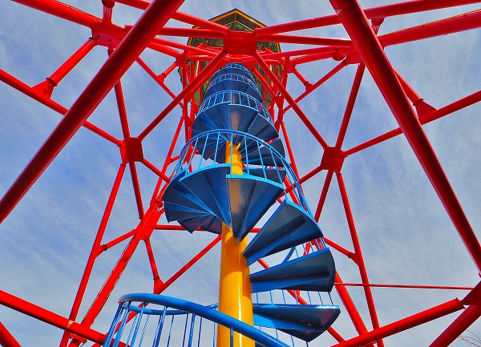
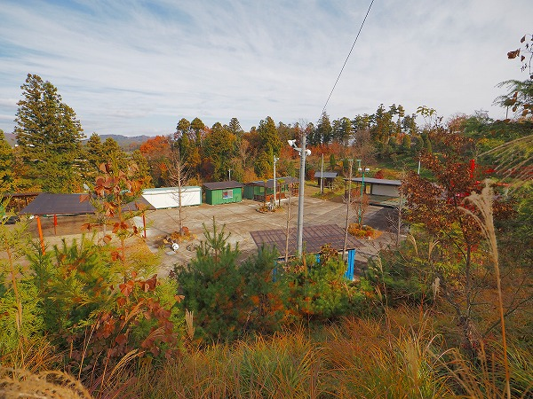

福島県二本松市に奇妙な公園がある。
その名は
原田公園。
地元の運送会社の社長が造った公園だ。
入り内には件の運送会社がある。
ご自由にご散策下さい、とあるので遠慮なくご自由にご散策させていただきます！
公園の入り口。
いきなり
オレンジのオルメカヘッドがお出迎え。
オルメカヘッドとは紀元前のメキシコのオルメカ文明を象徴する巨大な人頭像だ。
ちなみにこちら↓がメキシコ国立人類学博物館にあるオルメカ像の展示（レプリカ）。
何で福島にオルメカ？何でオレンジ？
更に
巨大な沖縄のシーサーも。
何で福島にシーサーが？で、何でオレンジ色？
この時点でここの公園を作った人が福島にありながらメキシコも沖縄も飲み込んでしまうほど
豪胆な脳内地図をお持ちであることが判る。
更に歩を進める。
招き猫、蛙、金の卵、弘法大師？、鐘楼など関連があるのかないのか良く分からないアイテムが並ぶ。
この時点でここの脳内地図が
一筋縄でいかない事を実感する。
石の観音像。
裏書を見ると母の供養のために建立したようだ。
ん？ここはお寺、なのかな？
傍らにはぴんころ地蔵。
と、思えば立派な石鳥居が。
鳥居には燦燦神社とある。
つまりここは
全ての神仏を飲み込んだ公園、いや楽園なのだ。
鳥居の向こうには大きなタワーが聳えている。

その先の赤鳥居の先には仁王像、その先には石祠。
これが燦燦神社なのだろうか。
この
オルメカ→シーサー→仏→神→神→仏→神→＆タワーの展開に頭がクラクラしてくる。
…スミマセン、常人である（？）私の理解の範疇をチョット越えてきたので、取り敢えず目の前に次から次へと現れる現象に集中させて貰います。
考察はその後で。
仏陀＆タワー。
涅槃像。
赤い鳥居群を潜り、タワーに向かう。
赤い鳥居と赤いタワーが妙にマッチしている。
鳥居には各干支の額が掲げられている。
そしていよいよタワーの直下へ。

赤いフレーム。青い階段。黄色い心柱。
そして緑の展望部分。
機能をそのまま色彩に反映した表現が素晴らしい。
案外狭い螺旋階段とスカスカな構造にビビりつつ最上階の展望台まで。
床がスケスケじゃないですか！
当方スケスケの高所が得意じゃないんでチョット内股気味に…。
鐘が吊ってあった。
見ればエディンバラキャッスル1948ロンドンとあった。
エディンバラ城の鐘なのだろうか？ホント？
下を見下ろす。
ここまで見てきた石鳥居、観音像、赤鳥居などがよく見える。
上の青い屋根が運送会社。
最早
会社の付帯事業を越えてしまっていることが判る。
敷地でいえばこちらの公園の方が本業、と言わざるを得ない。
塔の西側。
遠くに安達太良山が見える。
眼下には
大量の地蔵群。
その先にもさらに公園の敷地が続いている（画面中央左）。
ああ、ここにもオルメカヘッドが！
…という訳で、まだまだ先は長そうなので、下におりましょう。
下向きたくない…。
塔の逆サイドの鳥居は何か良さげな言葉が額に記されていました。
で、地蔵群である。

いわゆる水子地蔵だろうか。
一体一体に奉納者の名が記されていた。
地蔵群の後には七福神が。
左から大国、毘沙門、恵比寿、寿老人、布袋、弁天、福禄寿…あれ？ひとり多い！
8人目の七福神は傘寿布袋とあった。
多分ココのオーナーさんの傘寿（80才）記念なのだろう。
この像だけ顔がリアルだった。
さらに進む。
キャンプ場のような施設もあった。
ぐにゃりと曲がった柱が印象的だった。
一枚岩の橋とか池とか規模が凄い。

で、一段低くなった場所へ。
ここはステージらしきものがあったりプレハブ小屋が並んでいたり、今のところ稼働してないようだが将来的には宿泊施設か何かにするのだろうか。
その一段低い場所へはこの赤い螺旋階段を下りていく。
エジプトの神様…なのか？
この後七福神の裏手も見て回ったがまだまだ未完成な部分が多かった。
さらにその先には社長の自宅なのだろうか、ここと同じテイストの家があった。
この公園を造った社長のマックスなサービス精神を存分に浴びつつ公園を後にした。
御馳走様でした。お腹一杯です。
運送会社の中にも何かと気になるモノがあったりして、今後も気になるスポットだ。